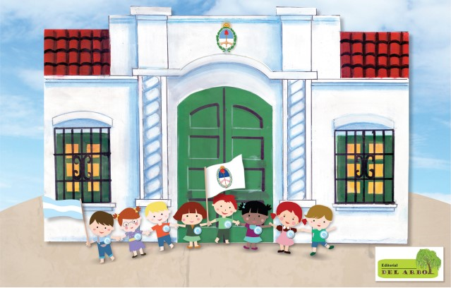

La Declaración de la Independencia de Argentina (9 de julio de 1816) Hace muchos años, un grupo de personas en Argentina querían ser libres de España, el país que los mandaba. Estas personas no querían que España siguiera diciendo qué podían o no podían hacer. El 9 de julio de 1816, en una ciudad llamada Tucumán, muchas personas se reunieron en un lugar grande. Decidieron decir que ya no querían seguir las órdenes de España. Querían que Argentina sea independiente y que nadie más pudiera mandarlos. Ese día fue muy importante porque, desde ese momento, Argentina comenzó a ser un país libre.
<
